Links: QA Report | History of published versions | Accessibility statement (Tilgængelighedserklæring) To the top

MedComCore profiles
MedComCore profiles
This fragment is not visible to the reader
This publication includes IP covered under the following statements.
| Type | Reference | Content |
|---|---|---|
| web | www.medcom.dk |
|
| web | www.medcom.dk |
IG © 2021+ MedCom
. Package medcom.fhir.dk.core#4.0.1 based on FHIR 4.0.1
. Generated 2026-11-11
Links: QA Report | History of published versions | Accessibility statement (Tilgængelighedserklæring) To the top |
| web | www.was.digst.dk | Links: QA Report | History of published versions | Accessibility statement (Tilgængelighedserklæring) To the top |
| web | www.omg.org |
ServD
|
| web | medcomfhir.dk | In MedComCoreDiagnosticReport it is allowed to include attachments. When sending an attachment diagnosticReport.media shall be used. The DiagnosticReport.media.link reference to MedComCoreMedia resource where the atachment shall be added. It is up to the user to assess when it is relevant to send an attachment. Only an attachment of the permitted formats must be included. Click here to see the permitted formats of an attachment |
| web | www.esundhed.dk | Encounter.episodeOfCare links encounters and messages concerning the same admission or contact. It can carry an LPR3 identifier from the Danish National Patient Registry , a locally defined identifier, or both. |
| web | svn.medcom.dk | The use of episode of care identifiers in OIOXML and EDIFACT is described in the municipality and hospital message-flow document (Danish PDF) . |
| web | nema.org | DICOM Tag Mapping |
| web | snomed.info | SNOMED CT Concept Domain Binding |
| web | medcomfhir.dk | Only an attachment of the permitted formats must be included. Click here to see the permitted formats of an attachment |
| web | www.omg.org | ServD |
| web | hl7.dk | This profile describes the MedComCoreOrganization. The MedComCoreOrganization is inherited from the DkCoreOrganization profile defined by HL7 Denmark. The base expectations when describing an organisation in a Danish context is to include an identifier, in terms of a Sundhundsvæsenets Organisations Register (SOR)-identifier. This profile is used to describe e.g. the organisation responsible for an encounter. |
| web | medcomfhir.dk | When using an organisation for exchange purposes, such as a sender, receiver or carbon-copy, please refer to the MedComMessagingOrganization . |
| web | hl7.dk | MedComCorePatient profile describes information about a patient or citizen in a MedCom standard. The MedComCorePatient is inherited from the DkCorePatient profile defined by HL7 Denmark. An identifier and the patients official family name ('efternavn' in Danish) SHALL both be present, when exchanging patient related information. |
| web | hl7.dk | When a patient has an official civil person register (CPR)-number this SHALL be used. To represent a CPR-number, the identifier DkCoreCprIdentifier SHALL be used. In the identifier the system is used to describes that value is an official CPR-number, as described on cpr.dk . |
| web | cpr.dk | When a patient has an official civil person register (CPR)-number this SHALL be used. To represent a CPR-number, the identifier DkCoreCprIdentifier SHALL be used. In the identifier the system is used to describes that value is an official CPR-number, as described on cpr.dk . |
| web | hl7.dk | Only in cases where the patient does not have an official CPR-number, a replacement person identifier (Danish: Erstatningspersonnummer) (eCPR)-number SHALL be used. More information concerning the use of eCPR-numbers can be found on DkCorePatient . |
| web | hl7.dk | This profile describes the MedComCorePractitioner which is used to describe a Practitioner in a MedCom standard. The MedComCorePractitioner is inherited from the DkCorePractitioner profile defined by HL7 Denmark. |
| web | medcomfhir.dk | It is prefered to use a code from MedComCorePractitionerRoles . If these does not cover the needs, the roles can be included in a string at PractitionerRole.code.text. |
| web | hl7.dk | In Denmark, we have a national HL7 affiliate, called HL7-DK . The affiliate works on the development of international HL7 standards that supports healthcare. HL7-DK has focuses on profiling the international standard in a Danish context to provide a common foundation in Denmark. HL7-DK develops DK-core which are generic FHIR profiles that can be used freely for FHIR projects in Denmark. The profile MedComCorePatient inherits from DKCorePatient . This means that when a MedCom standard uses a civil registration number (Danish: CPR-nummer) from DKCorePatient, it is defined in the same way as when other projects inherit from DK-core and use a civil registration number, securing consistency across projects. DKCorePatient is the foundation of MedComCorePatient, which is why MedComCorePatient is said to inherit from DKCorePatient. |
| web | hl7.dk | In Denmark, we have a national HL7 affiliate, called HL7-DK . The affiliate works on the development of international HL7 standards that supports healthcare. HL7-DK has focuses on profiling the international standard in a Danish context to provide a common foundation in Denmark. HL7-DK develops DK-core which are generic FHIR profiles that can be used freely for FHIR projects in Denmark. The profile MedComCorePatient inherits from DKCorePatient . This means that when a MedCom standard uses a civil registration number (Danish: CPR-nummer) from DKCorePatient, it is defined in the same way as when other projects inherit from DK-core and use a civil registration number, securing consistency across projects. DKCorePatient is the foundation of MedComCorePatient, which is why MedComCorePatient is said to inherit from DKCorePatient. |
| web | hl7.dk | You can read more about the work of HL7-DK here . |
| web | www.rfc-editor.org | RFC 2119 specifies common key words that may be used in protocol specifications, where RFC 8174 aims to reduce the ambiguity by clarifying that only UPPERCASE usage of the key words have the defined special meanings. |
| web | www.rfc-editor.org | RFC 2119 specifies common key words that may be used in protocol specifications, where RFC 8174 aims to reduce the ambiguity by clarifying that only UPPERCASE usage of the key words have the defined special meanings. |
| web | hapifhir.io | For implementers coding in java, the HAPI FHIR SDK describes the narrative generation here . Unfortunately, Firely's .Net SDK does not currently have a similar support for generating narratives. For inspiration on how the narrative can be structured, this Narrative Generator FHIR toolbox can be used, however MedCom cannot control that all rules mentioned in General Narrative Text Rules are supported. |
| web | fhirtoolbox.com | For implementers coding in java, the HAPI FHIR SDK describes the narrative generation here . Unfortunately, Firely's .Net SDK does not currently have a similar support for generating narratives. For inspiration on how the narrative can be structured, this Narrative Generator FHIR toolbox can be used, however MedCom cannot control that all rules mentioned in General Narrative Text Rules are supported. |
| web | medcomfhir.dk | This Implementation Guide (IG) contains various Core (essential) profiles used across most, if not all, MedCom FHIR standards/IGs'. These profiles can be found in the Profiles menu. Furthermore this IG also defines the shared requirements for MustSupport, narratives, validation, testing, and versioning. The Terminology IG owns the terminology governance including independent terminology versions and lifecycle dates. |
| web | hl7.dk | This IG has a dependency to DK-core , defined by HL7 Denmark . You will see this reflected in many of the MedCom profiles. Both IG's define core profiles but on different levels. While DK-Core should be used in every single FHIR IG in Denmark, MedCom Core is only meant for MedCom IG's. |
| web | hl7.dk | This IG has a dependency to DK-core , defined by HL7 Denmark . You will see this reflected in many of the MedCom profiles. Both IG's define core profiles but on different levels. While DK-Core should be used in every single FHIR IG in Denmark, MedCom Core is only meant for MedCom IG's. |
| web | medcomfhir.dk | At the time of writing, most FHIR IGs' in Denmark are Messaging based exchanges. And for that specific transport protocol there is the MedCom Messaging IG IG which defines the additional governance and transport requirements for messaging-based exchange. |
| web | medcomfhir.dk | Please visit medcomfhir.dk |
| web | test.itb.medcom.dk | Go to ITB Login |
| web | medcomfhir.dk | You are reading an IG right now. Others can be found here . |
| web | medcomfhir.dk | All of our Standards can be found here . |
| web | medcomfhir.dk |
MedComMessaging profiles
, MedComCore profiles |
| web | medcomfhir.dk |
MedComMessaging profiles
, MedComCore profiles |
| web | browser.ihtsdotools.org | Predetermined by HL7 e.g. gender , from an international terminology e.g. SNOMED CT , or defined by the developer of the IG e.g. categories categories in a CareCommunication message. |
| web | medcomfhir.dk | Predetermined by HL7 e.g. gender , from an international terminology e.g. SNOMED CT , or defined by the developer of the IG e.g. categories categories in a CareCommunication message. |
| web | medcomfhir.dk | MedComMessagingMessageTypes is a ValueSet that includes all codes from the MedComMessagingEvents CodeSystem. The ValueSet includes the codes for MedComs FHIR standards |
| web | medcomfhir.dk | MedComMessagingMessageTypes is a ValueSet that includes all codes from the MedComMessagingEvents CodeSystem. The ValueSet includes the codes for MedComs FHIR standards |
| web | medcomfhir.dk | The elements Patient.identifier, Patient.name and Patient.address does all have the flag MustSupport in the MedComCorePatient profile. |
| web | www.youtube.com | FHIR-introductionswebinar (17. may 2022) |
| web | www.youtube.com | FHIR demo-webinar with MedCom, Mjølner and Trifork (10 . february 2022) |
| web | medcom.dk | Before using the implemented standard in a production environment to exchange patient data, it must be tested and certified by MedCom to ensure it fulfills the standard and business requirements. In addition to the usual MedCom test setup - with a pre- and live test - Interoperability Test Bed (ITB) is used as a tool to validate FHIR messages and documents sent in different use cases. |
| web | test.itb.medcom.dk | Before using the implemented standard in a production environment to exchange patient data, it must be tested and certified by MedCom to ensure it fulfills the standard and business requirements. In addition to the usual MedCom test setup - with a pre- and live test - Interoperability Test Bed (ITB) is used as a tool to validate FHIR messages and documents sent in different use cases. |
| web | www.nuget.org | Firely |
| web | www.nuget.org | For .NET Firely with docs here and a MedCom example here |
| web | docs.fire.ly | For .NET Firely with docs here and a MedCom example here |
| web | github.com | For .NET Firely with docs here and a MedCom example here |
| web | hapifhir.io | HAPI FHIR – Instance Validator |
| web | smilecdr.com | SMILE Digital Health |
| web | linuxforhealth.github.io | LinuxForHealth |
| web | www.health-samurai.io | AidBox – FHIR Schema Validator |
| web | medcomfhir.dk | Please see MedCom Messaging IG . |
| web | sundhedsdatastyrelsen.dk | Patientindeks domæneregler for dokumentdeling / Patient indexing rule for documentsharing |
| web | test.itb.medcom.dk | You can use the validator at itb.medcom.dk . In this IG you can find a guide . |
| web | fire.ly | There are many different ways to FHIR validate. You could validate in your terminal with something like Firely Terminal . Or using a validator jar file - more information can be found here . |
| web | semver.org | MedComs FHIR standards follow the semantic versioning, version 2.0 , which is adjusted to the workflow in MedCom. Some documents, such as use cases or test protocols, will have an individual version and a release note, to keep track of the changes in the document. The IG will have one version that covers all the included artefacts. Versioning of the clinical guidelines, use cases, test material, and more will follow the major and minor version of the technical specifications in the IG, but may have a patch version that is different from the IG’s patch-version. |
| web | sundhedsdatastyrelsen.dk | The major and minor versions are recorded in Det Rådgivende Udvalg for Standarder og Arkitekturer (RUSA) . RUSA is a Danish advisory committee for standards and architecture. RUSA is working to ensure coherence and interoperability in digital solutions in the healthcare field. If a document or an IG has an extra number eg. 2.1.4-a.1 it is a prerelease and therefore not ready for implementation. In this Standard Operating Procedure (SOP) 4.1 you can read more about the use of semantic versioning in MedCom and what it means for changes in the FHIR standards. Click here to read SOP-4.1. |
| web | svn.medcom.dk | The major and minor versions are recorded in Det Rådgivende Udvalg for Standarder og Arkitekturer (RUSA) . RUSA is a Danish advisory committee for standards and architecture. RUSA is working to ensure coherence and interoperability in digital solutions in the healthcare field. If a document or an IG has an extra number eg. 2.1.4-a.1 it is a prerelease and therefore not ready for implementation. In this Standard Operating Procedure (SOP) 4.1 you can read more about the use of semantic versioning in MedCom and what it means for changes in the FHIR standards. Click here to read SOP-4.1. |
| web | medcomfhir.dk | The MedCom Terminology IG and its individual CodeSystems, ValueSets, and ConceptMaps have independent versions. The terminology-specific rules, including how changes affect standards that use the terminology, are maintained in Terminology governance . |
| web | github.com | submit an issue to the relevant MedCom GitHub repository |
| web | github.com | Please notice that you must have a GitHub account to be able to "watch" the repository. If you don't have a GitHub account, you can create one at GitHub |
| web | github.com | Go to the MedCom GitHub repository |
|
GitHubWatchRelease1.png 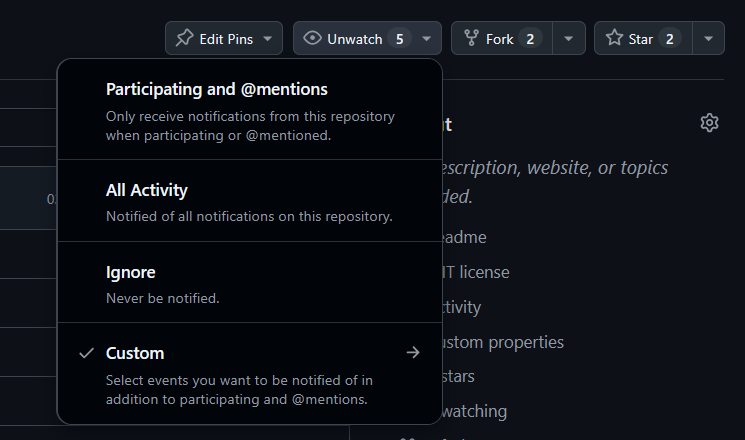 |
|
GitHubWatchRelease2.png 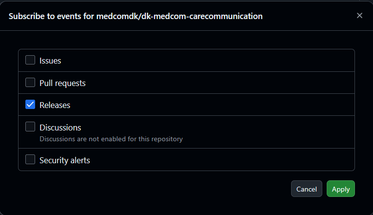 |
|
ITBAddConformance.png 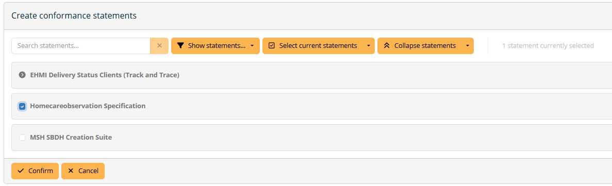 |
|
ITBAddFile.png 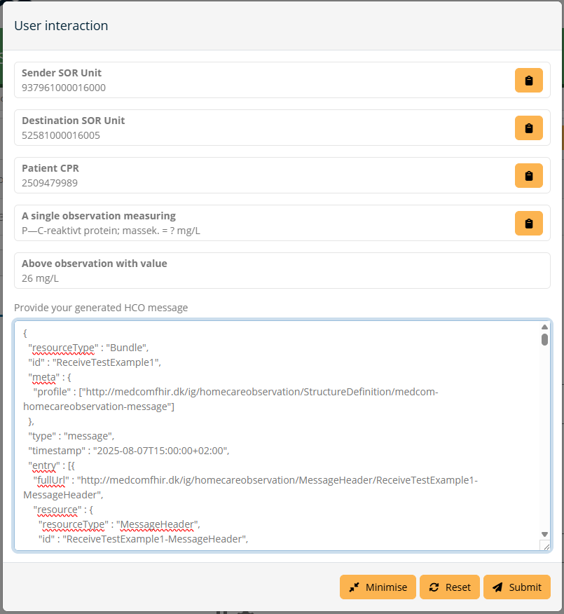 |
|
ITBCreateConfomance.png 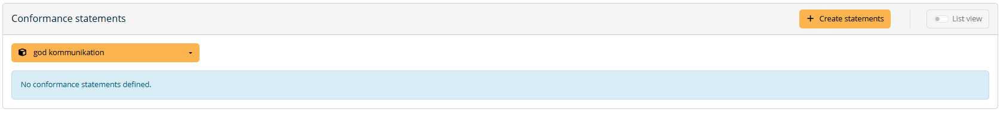 |
|
ITBCreateSystem.png 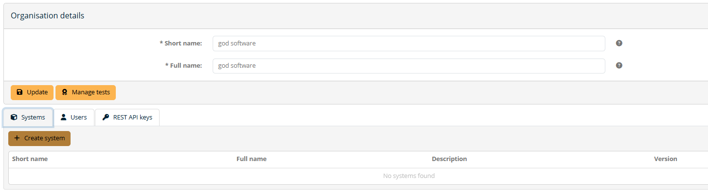 |
|
ITBCreateUser.png 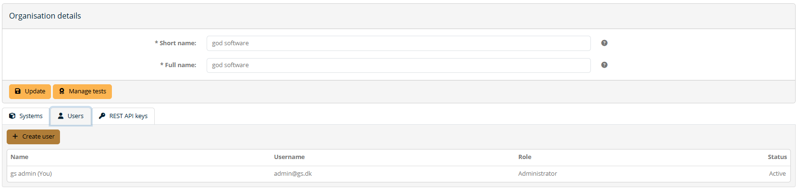 |
|
ITBPretestFlag.png 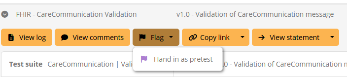 |
|
ITBSeeResult.png 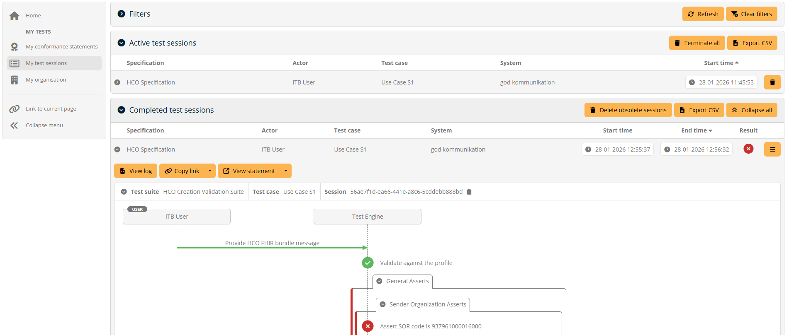 |
|
ITBSelectConfState.png 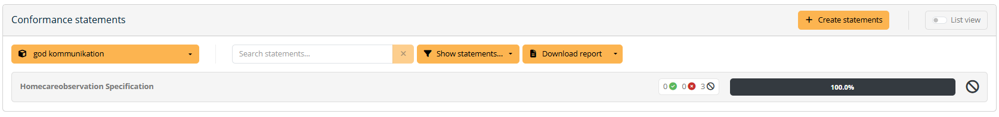 |
|
ITBSelecttest.png 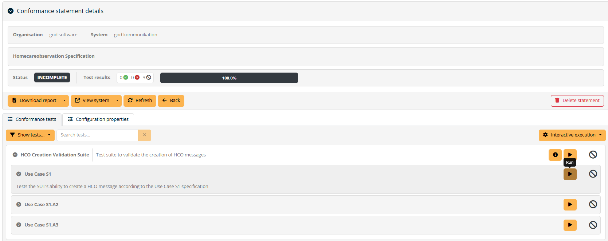 |
|
ITBStartTest.png 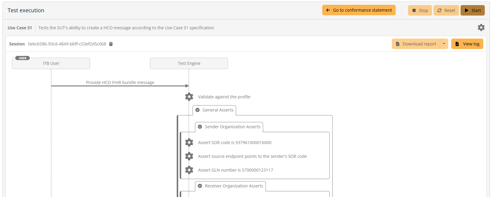 |
|
ITBTestResult.png 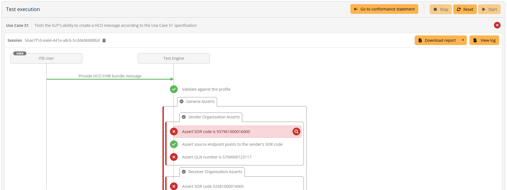 |
|
MultipleIGs.png 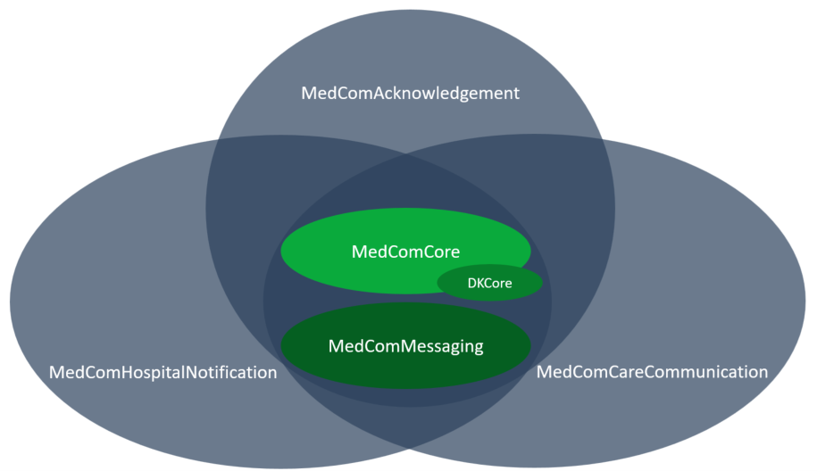 |
|
WhatisDKCore.png 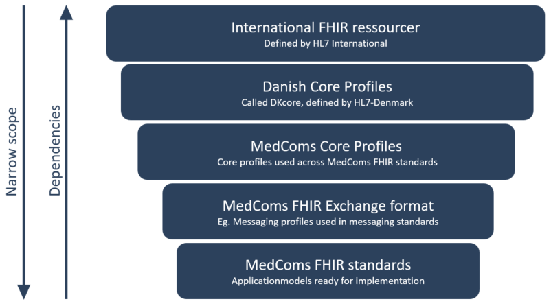 |
tree-filter.png 
|